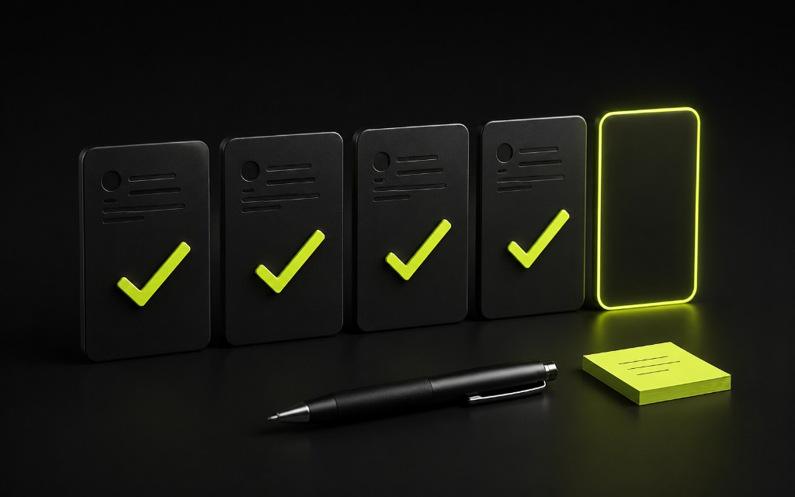

Бриф — это не анкета на 40 полей
Длинный документ, который никто не читает, хуже короткого рабочего брифа. Цель — зафиксировать, зачем нужен сайт или Telegram-бот, кто клиент, что считается успехом и откуда возьмутся заявки. В Ташкенте проекты чаще горят не из‑за вёрстки, а из‑за плавающего ТЗ.
Ниже — каркас, которым можно стартовать разработку без иллюзий «потом решим».

Обязательные блоки
- Цель. Заявки, запись, заявки в CRM, имидж, поддержка — выберите главное.
- Аудитория. Кто платит и кто пользуется; язык общения (ru/uz).
- Оффер. Что продаём одним предложением без канцелярита.
- Каналы. Реклама, SEO, Telegram, офлайн QR — что реально будет.
- Ограничения. Срок, бюджет «от», что нельзя трогать (бренд, юр.текст).
Добавьте примеры «нравится / не нравится» с пояснением почему. «Сделайте красиво» в бриф не считается.
Вопросы про заявки и процесс
- Куда должна падать заявка: почта, Telegram-бот, CRM?
- Кто отвечает и за какое время?
- Какие поля минимально нужны для первого контакта?
- Нужна ли аналитика событий с первого дня?
Без ответов сайт рискует стать красивой витриной. Для бизнеса в Узбекистане скорость реакции часто решаёт сделку — заложите это в бриф явно.
Контент и доступы
Кто пишет тексты, кто даёт фото, кто владеет доменом и хостингом. Если контента нет — срок автоматически врёт. Зафиксируйте дату готовности материалов и что делает команда, если текстов нет: плейсхолдеры или перенос релиза.
Когда не надо писать бриф «на вырост»
Не пытайтесь в одном документе описать сайт, приложение, бота, ERP и франшизу. Suffice: MVP-сценарий на 4–6 недель. Остальное — бэклог с приоритетами. И не меняйте цель каждую неделю без формального апдейта scope и сроков.
Хороший бриф экономит две недели споров. Это инвестиция в понятный лендинг, рабочую форму и спокойный запуск — а не бюрократия ради файла.
Мини-бриф на одну страницу — шаблон
Цель проекта одной строкой. Аудитория и гео (Ташкент / регионы / онлайн). Главный оффер. Канал заявок (форма, Telegram-бот, телефон). Критерий успеха на 30 дней (число заявок, время ответа, % обработанных). Срок и бюджетный коридор. Ограничения бренда. Список must-have экранов. Список later. Контакты решающих лиц.
Этого достаточно, чтобы стартовать аналитику и прототип. Остальное собирайте в приложении: референсы, доступы, юридические тексты. Если решающих лиц трое, укажите, чей голос финальный по тексту и по визуалу — иначе согласование убьёт календарь.
Проверьте бриф вопросом «что будет, если не сделать проект?». Если ответа нет, цель размыта. Проверьте вопросом «откуда придут первые 50 визитов?». Если тишина — даже отличный сайт останется без сигнала, и вы начнёте спорить о кнопках вместо трафика и CRM-процесса.
Обновляйте бриф при смене цели. Новый «ещё и каталог, ещё и кабинет» без пересмотра сроков — путь к конфликту. Нормальная практика: change request с оценкой. Для бизнеса в Узбекистане, где решения бывают быстрыми и устными, письменная фиксация спасает отношения.
Хороший бриф уважает время всех сторон. Он короче презентации агентства и полезнее переписки на 200 сообщений. Начните с него — даже если «очень срочно». Особенно если срочно.
Бриф для сайта и бриф для бота — в чём разница
Для сайта важны структура страниц, SEO-интенции, доказательная база, tone of voice. Для Telegram-бота — шаги диалога, тексты кнопок, ветки ошибок, эскалация, статусы для CRM. Если делаете оба канала, держите общий блок про оффер и аудиторию, а сценарии разведите. Иначе копипаст с лендинга в бота получается деревянным.
Уточните юридические ограничения: что нельзя обещать в рекламе и на сайте. Это часть брифа, не «потом юрист посмотрит». Особенно для финансов, медицины и обучения.
Соберите доступы списком: домен, хостинг, счётчики, кабинет рекламы, бот-токен. Передача доступов в последний день — классика сорванных запусков в Ташкенте. Назначьте дату готовности доступов отдельно от даты дизайна.
Закройте бриф подписью/подтверждением в почте или мессенджере. Устное «да, давайте» без фиксации потом вспоминают по-разному. Письменный якорь бережёт и клиента, и команду getsite.
Частые дыры в брифах и как их закрывать
Нет владельца решения. Нет канала заявок. Нет понимания источника трафика. Нет срока контента. Нет ограничения scope. Закрывайте дыры вопросами, а не догадками. Лучше неприятный ответ сейчас, чем неделя работы в пустую.
Если клиент говорит «нужно как у конкурента», разберите конкурента на элементы: что именно нравится — структура, тон, скорость, доверие. Иначе команда начнёт копировать чужой бренд целиком и потеряет ваш оффер.
Для двуязычных проектов сразу решите, какой язык главный для MVP. Параллельный запуск ru/uz удваивает контент. Часто разумнее один язык в первую версию, второй — этап 2 с отдельным бюджетом.
Бриф — живой документ до freeze. После freeze изменения только через процедуру. Так вы сохраняете уважение к сроку и к деньгам. Бизнесу в Узбекистане это калибрует ожидания лучше любых красивых обещаний «гибкости».
Бриф как инструмент диагностики
Хороший бриф не только для разработчиков. Он помогает клиенту самому понять продукт. Иногда после заполнения оказывается, что нужен не большой сайт, а Telegram-бот и короткий лендинг. Это нормальный исход диагностики — особенно если вы строите долгосрочные отношения.
Дайте клиенту пример заполненного брифа. Пустой шаблон пугает. Пример с вымышленной компанией из Ташкента ускоряет старт. Уберите жаргон: пишите «куда приходят заявки», а не «оптимизация лид-пайплайна».
После согласования положите бриф в пространство проекта и ссылайтесь на него при спорах. Это снижает градус и экономит часы совещаний. Когда объём растёт — обновляйте версии документа, не переписывайте историю устно.
Короткий вывод: без брифа вы покупаете хаос на второй неделе. Соберите цель, аудиторию, канал заявок, срок, must-have и владельца решений на одной странице. Обновляйте документ при смене scope. Чем честнее старт, тем дешевле лендинг или Telegram-бот в итоге — и тем спокойнее бизнес в Узбекистане переносит запуск.
Практический совет напоследок: зафиксируйте ответственного и дату следующего разбора цифр. Без даты улучшения растворяются в операционке. Для команд в Ташкенте короткий ритуал раз в две недели — достаточная частота, чтобы сайт, лендинг или Telegram-бот не застаивались и продолжали приносить заявки.